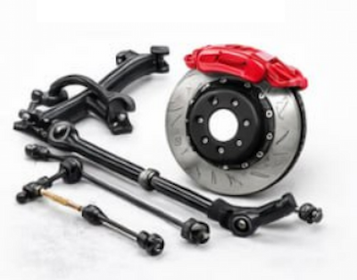
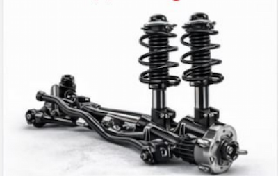
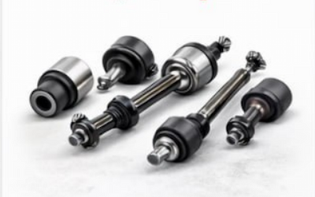
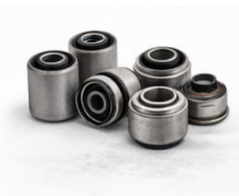
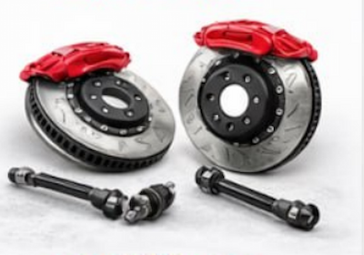
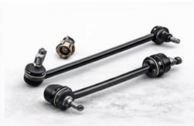
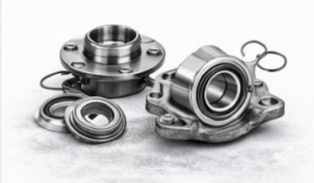
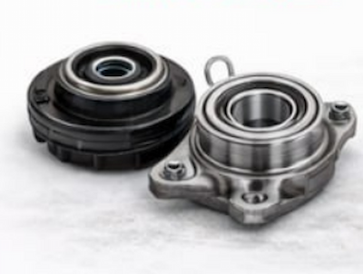

ДІАГНОСТИКА ТА РЕМОНТ ХОДОВОЇ ЧАСТИНИ
У БУЧІ, КИЄВІ ТА ОБЛАСТІ
м. Буча, Київська обл., вул. Депутатська, 3
Обслуговуємо авто з: Києва • Ірпеня • Гостомеля • Ворзеля
Ремонт ходової на СТО АЛЕКС-ГАЗ
Наш сервіс у Бучі спеціалізується на ремонті ходової частини автомобілів усіх марок та років випуску. Коли з'являються проблеми з підвіскою – це не просто дискомфорт, а пряма загроза безпеці руху. Ми відновлюємо роботу всіх вузлів ходової частини, повертаючи вашому авто стабільність та чіткість керування.
Найчастіші проблеми, які ми вирішуємо
📢 Постійні стуки при їзді
Зазвичай викликані зношеними шаровими опорами, рульовими наконечниками або сайлентблоками. Після ремонту – абсолютна тиша в салоні.
🧭 Авто "веде" в сторону
Найчастіша причина – знос деталей підвіски або проблеми з гальмами. Після ремонту машина їде рівно без будь-яких зусиль.
🚗 Погіршення керованості
Авто стало "плавучим" на дорозі, пізно реагує на повороти керма. Після ремонту – чітка та передбачувана поведінка.
🛞 Нерівний знос шин
Сигналізує про проблеми з геометрією підвіски. Усунення причини зносу зберігає ваші шини та гроші.

Наші послуги з ремонту ходової у Бучі, Києві та області
Діагностика
ходової частини
від 500 грн
Заміна амортизаторів
(стоїк)
від 800 грн

Заміна
шарових опор
від 600 грн
Заміна сайлентблоків
важелів
Від 500 грн

Заміна
рульових тяг
від 500 грн
Заміна
стойок стабілізатора
від 500 грн

Заміна
підшипників ступіц
від 900 грн
Заміна
опорних підшипників
Від 500 грн

Отримайте знижку 5 % на встановлення ГБО прямо зараз!
Залиште свій номер телефону і наш менеджер зв'яжеться з вами для оформлення знижки
Відгуки клієнтів києвської області

Дмитро Кравченко
На авто з'явився сильний стук у передній підвісці. Приїхав до хлопців з Києва. Майстри СТО АЛЕКС-ГАЗ швидко провели діагностику - виявили знос шарових опор та сайлентблоків. Замінили деталі якісними аналогами. Тепер їзда тиха та комфортна. Рекомендую ремонт ходової у Бучі!

Анна Петренко
Після зими машина почала сильно клевати носом при гальмуванні. Діагностика показала, що амортизатори повністю вийшли з ладу. Менеджери допомогли вибрати якісні комплектуючі, майстри професійно встановили. Тепер авто тримає дорогу набагато краще. Сам з Ірпеня. Дякую за швидкий та якісний ремонт підвіски!

Олександр Шевчук
Авто почало сильно вести в ліву сторону, з'явився нерівномірний знос шин. Фахівці знайшли проблему: зламана стійка стабілізатора та зношені рульові наконечники. Все замінили, перевірили геометрію підвіски. Тепер машина їде рівно та безпечно. Найкраща діагностика ходової в області!

Наталія Бойко
Шукала сервіс для комплексного ремонту ходової частини після ДТП. У СТО АЛЕКС-ГАЗ провели повну перевірку всієї підвіски, замінили рульові тяги, наконечники та сайлентблоки. Працювали акуратно, дали гарантію 12 місяців. Тепер авто як нове! Ремонт ходової у Бучі - це професіоналізм та надійність.

Віктор Ткаченко
Після зимових доріг з'явилися сторонні звуки в підвісці. Майстри СТО АЛЕКС-ГАЗ провели повну діагностику ходової: перевірили всі вузли, виявили послаблені кріплення та зношені втулки. Все підтягнули, замінили необхідне. Стуки зникли, керованість покращилась. Приїхав з Києва (Дарницький район). Рекомендую діагностику ходової у Бучі всім!

Михайло Коваль
Задня частина авто почала "прігати" на нерівностях, з'явився глухий стук. Приїхав з Гостомеля на діагностику. Виявилося - вийшли з ладу задні амортизатори та зношені сайлентблоки балки. За 1 день все замінили на оригінальні запчастини. Тепер задня підвіска працює ідеально, комфорт повернувся. Дякую за якісний ремонт ходової частини!
Ваш запит відправлено!
Наші спеціалісти зателефонують Вам протягом 10 хвилин!